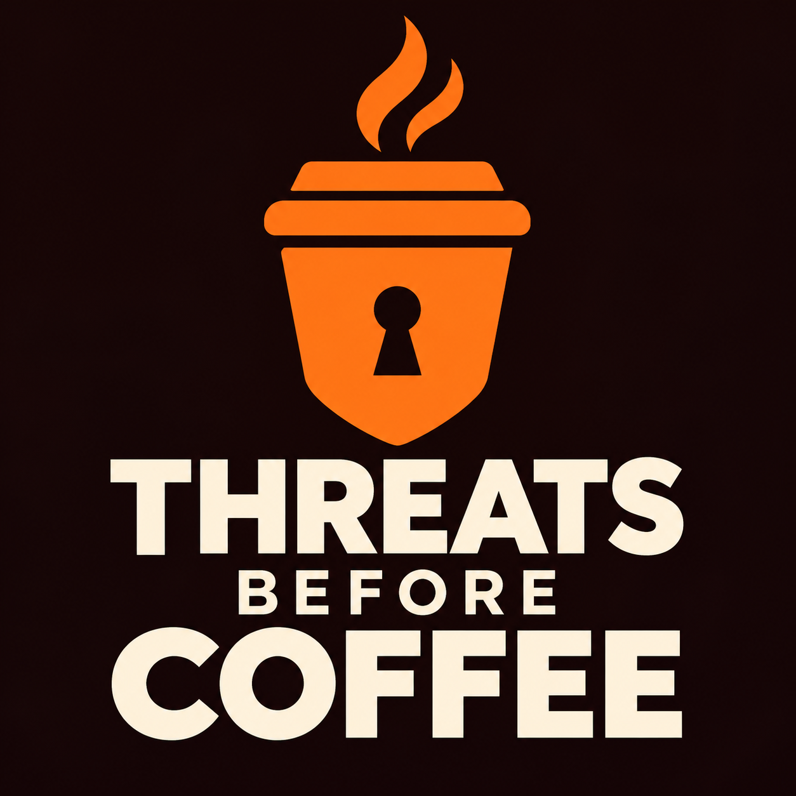

Your daily cyber, AI and tech briefing, served before the first coffee. Every morning, 7 days a week, Threats Before Coffee covers only the stories that matter: exploited vulnerabilities, major breaches, nation-state hacks, AI breakthroughs, and the geopolitics and money behind them. Fully AI-produced: researched and fact-checked by Claude, voiced with NotebookLM. Sources in every episode's notes.